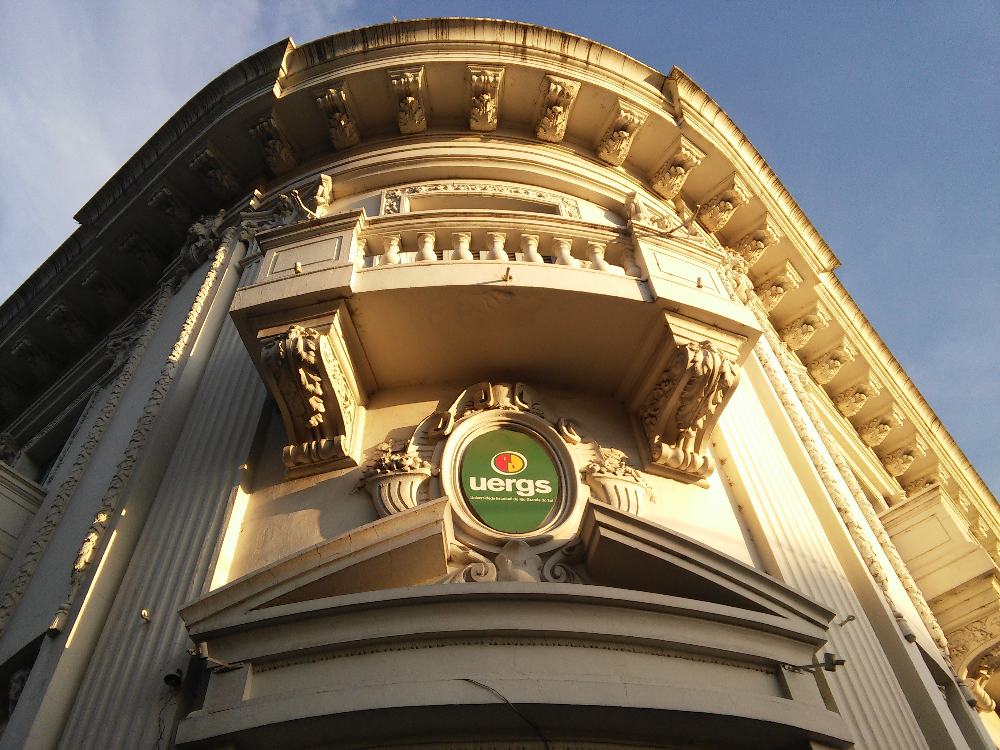

Sobre a porta principal, há um frontão retangular recortado e sobre ele está um medalhão ovalado com elementos florais e espiralados em seu contorno. O frontão é sustentado por consolos.
Arquitectura

Nas laterais do prédio encontram-se dispostas duas esculturas, uma de cada lado, de deuses da mitologia greco-romana, do lado esquerdo está a de Hefestos ou Vulcano (foto acima). Hefestus é considerado o deus da metalurgia, ele é caracterizado por estar acompanhado de seus atributos: a bigorna, o martelo, um formão e uma engrenagem com correntes.
Do lado direito da porta principal está localizada a escultura de Hermes ou Mercúrio (imagem acima). Hermes é representado como uma figura andrógina, ele é protetor do comércio carrega em uma das mãos frutos e plantas fazendo referência a agricultura, uma das riquezas da região, e na outra o caduceu. Usa seu capacete alado e assim como a outra escultura possui inspiração grega na estrutura da escultura.
As cabeças de leões de onde saem cordas com o formato de guirlanda de plantas, colocadas bem acima nos dois vãos, simbolizam a força e o poder da firma bancária.
Tanto no primeiro piso como no segundo as aberturas possuem verga reta, no primeiro piso as janelas são gradeadas com enfeites leves em forma de fitas e com formas curvas.

No segundo piso as porta sacadas possuem balcões individuais decorados com caixotões lisos e balaústres, são sustentados por consolos. As aberturas são emolduradas com ornamentos florais espiralados.